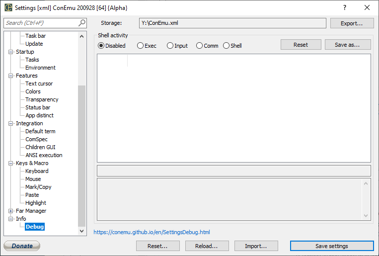

---
---
Settings: Debug

Shell activity
Reset
Save as...
- Disabled Disable debug logging. This implies on ‘Settings’ dialog close.
- Shell Log shell calls (progress creations, library loadings, etc.) ‘Inject ConEmuHk’ is required
- Input Log keyboard and mouse activities
- Cmd Log internal ConEmu (GUI<-->Server) calls
- Ansi
- Debug Automatically attach ConEmu debugger to all started processes